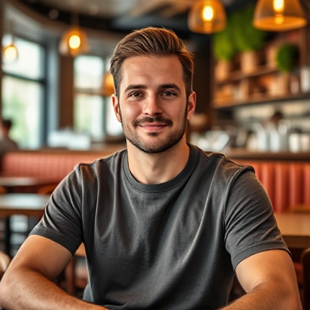
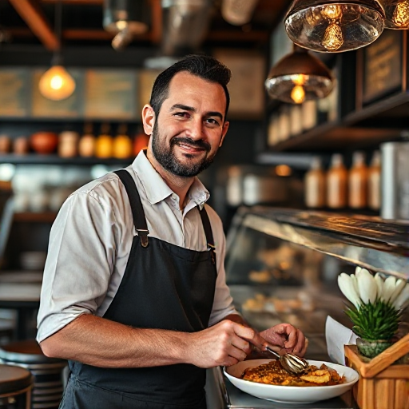
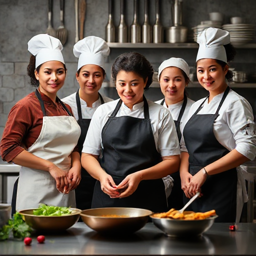

Upoznajte se sa nama, ovo je naša priča.

|
Dobrodošli u Ujninu Kujnu, mesto gde se spajaju ljubav prema tradiciji i savremeni pristup kuvarstvu. Smeštena u srcu Kikinde, naša picerija je simbol porodične tradicije koja traje od 2006. godine. Počeli smo kao mali fast food, a kroz godine truda i posvećenosti izrasli u omiljeno odredište ljubitelja dobre hrane. U Ujninoj Kujni, gosti mogu uživati u bogatom meniju koji uključuje sve od tradicionalnih jela, preko specijaliteta naše kuhinje, pa sve do popularnih pizza koje su postale zaštitni znak našeg restorana. Atmosfera našeg restorana je inspirisana retro stilom, što stvara prijatan ambijent u kojem se svaki posetilac oseća kao kod kuće. |
| Bilo da dolazite sa porodicom, prijateljima ili poslovnim partnerima, naš cilj je da vam pružimo nezaboravno iskustvo. Posvećeni smo tome da vam svakim zalogajem donesemo miris domaće kuhinje i topli ugođaj. Dođite u Ujninu Kujnu i otkrijte zašto smo omiljeni restoran u Kikindi, i kako smo stekli poverenje i ljubav svih naših gostiju. Ujnina Kujna - Uvek tu, u srcu Kikinde, sa ljubavlju pripremljenim jelima i toplim dočekom za svakog gosta. |
Naš Tim

Mirko Petrović
Vlasnik restorana, strastveni ljubitelj hrane i verna podrška svom timu.

Marko Jovanović
Glavni kuvar sa 15 godina iskustva u pripremi tradicionalne i moderne kuhinje.

Naš Tim
Posvećen tim koji se svakodnevno trudi da obezbedi najbolje iskustvo za naše goste.